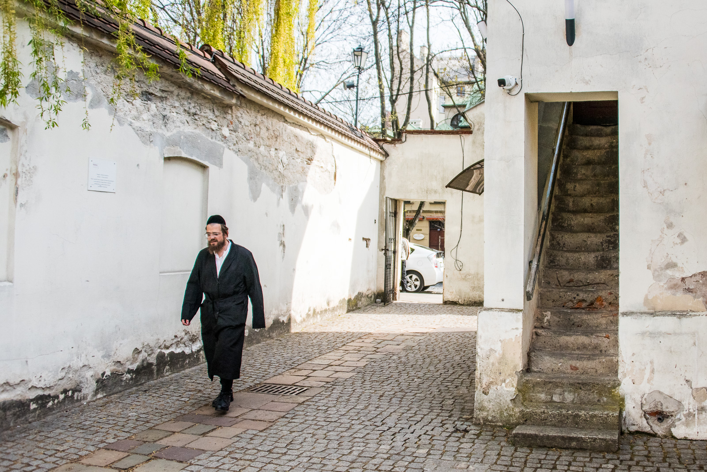
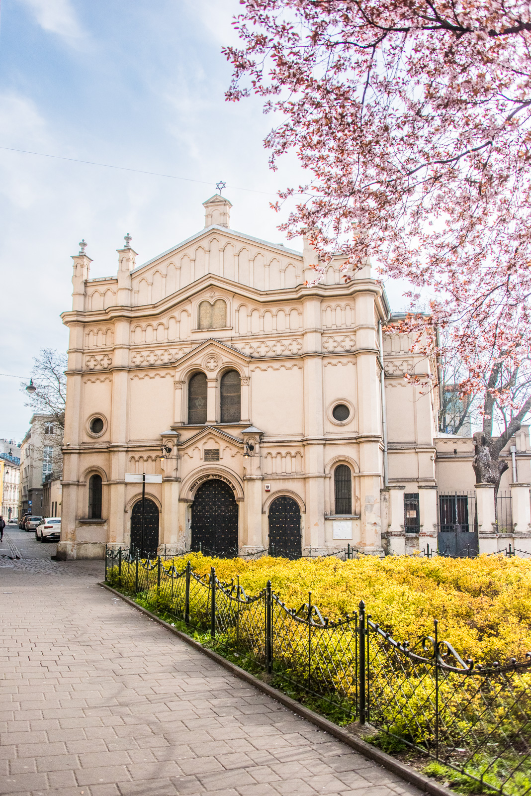
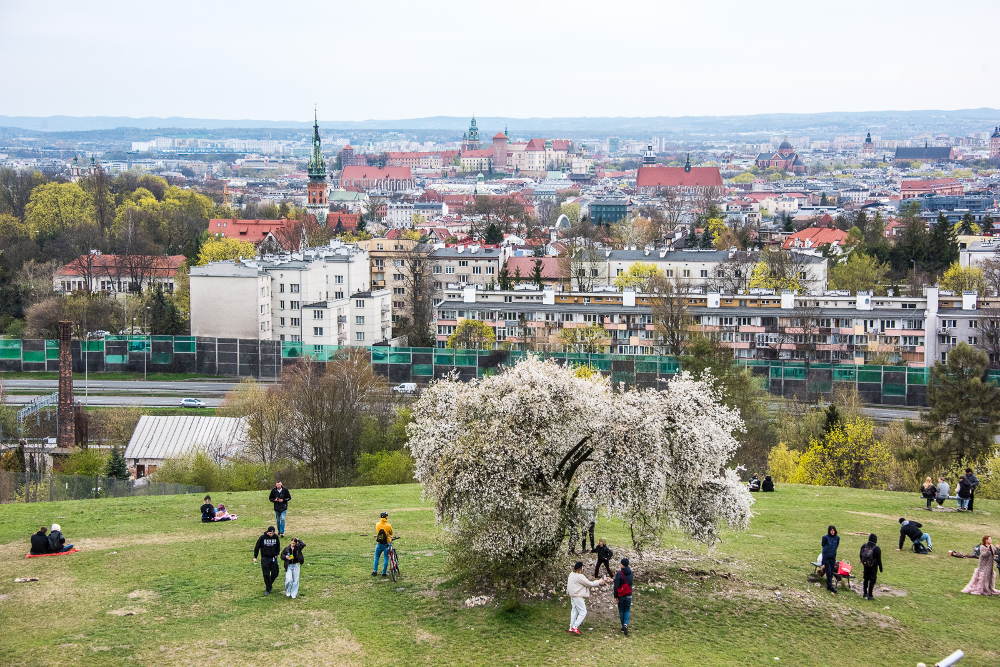
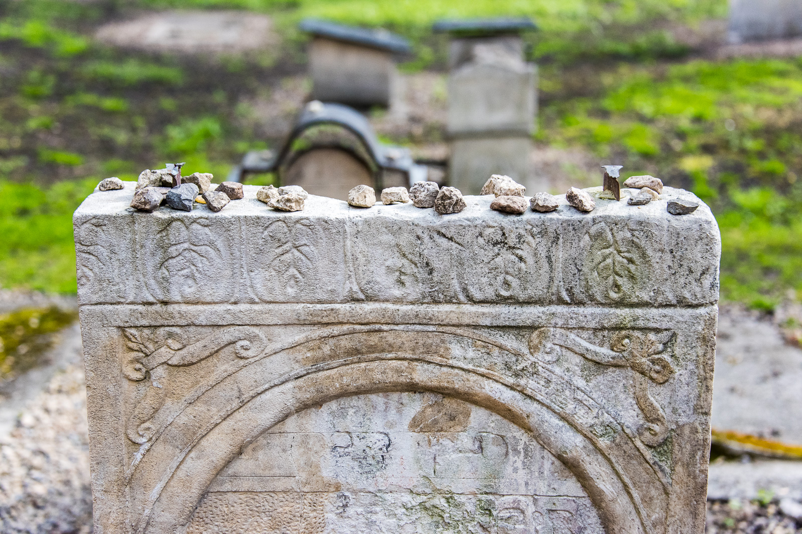
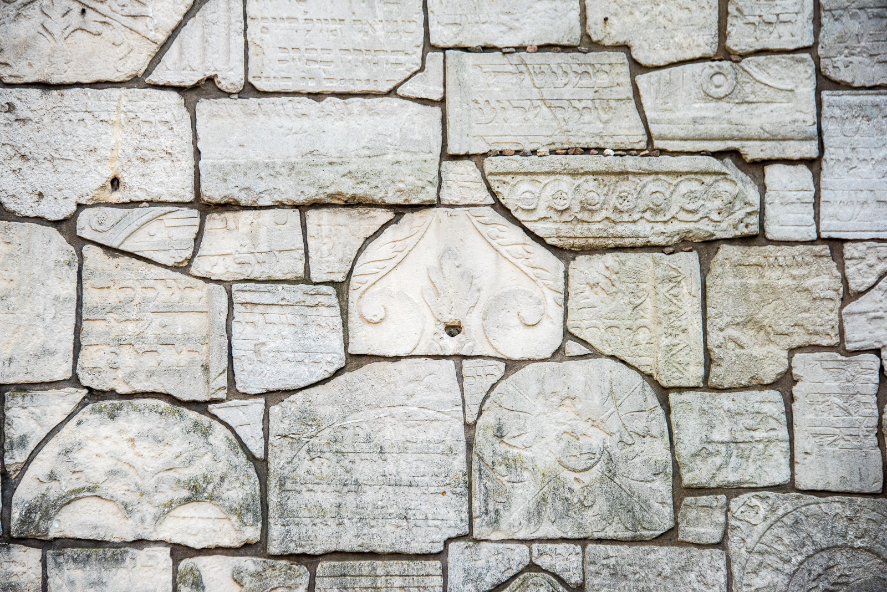
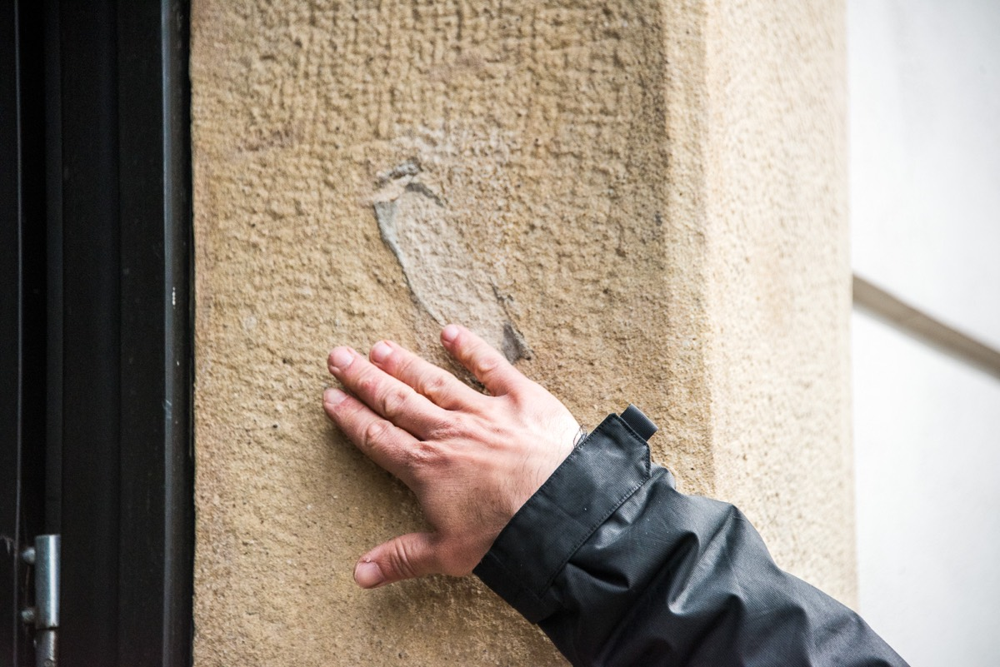
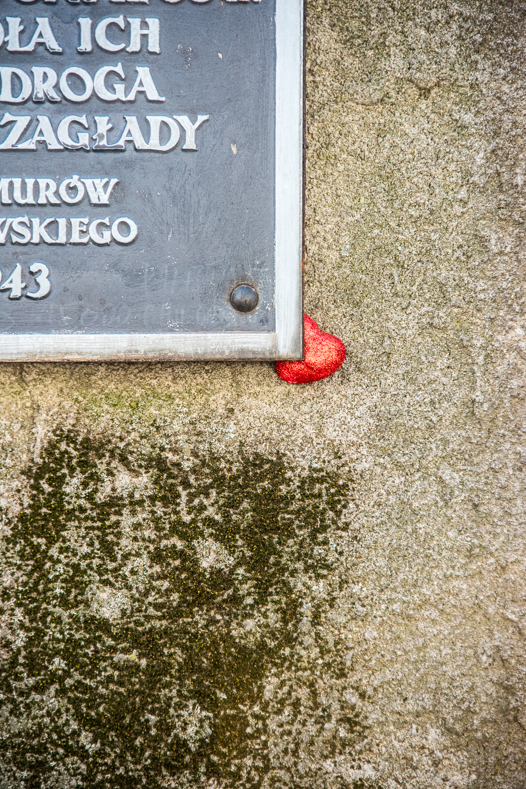
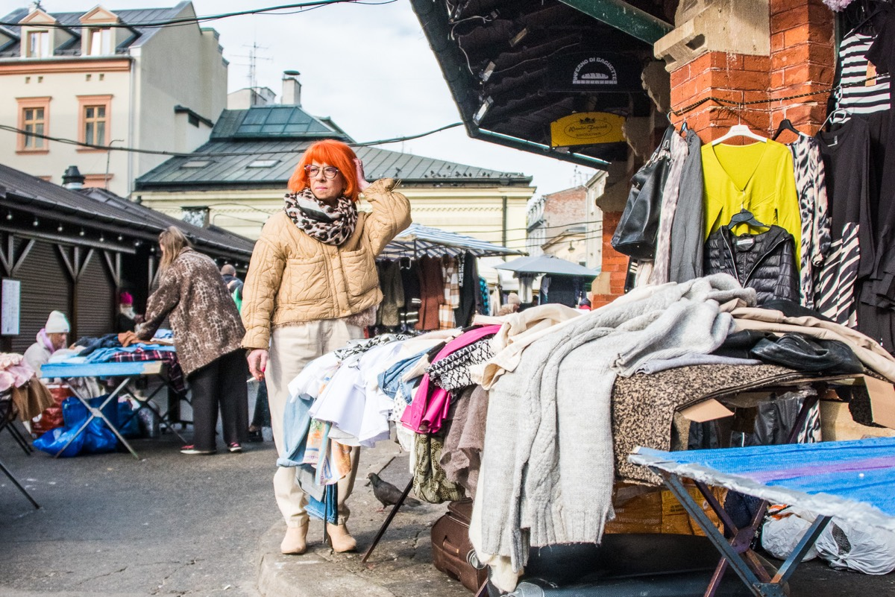

Why Jewish People
Came to Poland
The guide starts with a problem. Most of the Nazi death camps were in occupied Poland, and they tend to stand in for the whole story. His aim for the afternoon is to put back the thousand years that came before.


"Most of the death camps were here. And that is a bit of a challenge, because those camps overshadow a thousand years of Jewish life here."
— The guide
The arrangement was practical on both sides. After the fall of Rome, Jews faced growing violence across a Christianising Europe. Poland, on the edge of the continent, needed merchants, traders and moneylenders to build its towns. Jews needed safety; Poland needed their skills.
The first Jew on record in Kraków is Ibrahim ibn Yaqub, a traveller from the Caliphate of Córdoba, who wrote about his visit in 965. Poland is usually dated from 966.
"A Jewish guy was here a year before Poland was here. A long presence." — The guide
After the Mongols destroyed Kraków in 1241, the city was rebuilt by settlers from the west, Jewish communities among them. They were given a street in the centre (today's St Anne Street), a quarter of the main market, and the right to speak Yiddish. By the 15th century, commercial rivalry and the power of the Church had pushed them out of Kraków itself and into Kazimierz, the separate town on an island to the south founded by King Casimir the Great.
The Old Synagogue &
a Map of Migration
The Old Synagogue is the oldest surviving synagogue in Poland, and it looks almost exactly like the Altneuschul in Prague. That is no accident. When Crusaders reached Prague in 1096, Jews fled east and took their builders' habits with them: from the Rhineland to Prague, then on to Poland, Austria and Hungary. Plot these synagogues on a map and you have the route of Ashkenazi migration.
The Ashkenazim were a different world from the Sephardim of Muslim Spain and the Mediterranean, with their own languages, customs, law and philosophy. In Poland they ran their own affairs through the kahał: a chief rabbi, a rabbinical court and a community council, with the synagogue as town hall as well as house of prayer.
"Imagine you're a teenager with your own room with a lock on the door. Even if your mum will burst through in 30 seconds, those 30 seconds matter for developing a healthy identity. That's what this autonomy was for Jewish people here."
— The guide
The Germans tried to destroy the building with grenades; the ceiling came down onto the floor. After the war, Polish restorers put it back together piece by piece. The guide reckons it is about 90% original.
In 1794 Tadeusz Kościuszko, who had already fought in the American War of Independence, came to this synagogue to recruit Jewish volunteers against Russia. Most of the congregation said nothing. Some prayed for him; some gave money quietly.
A few young men signed up anyway, on the reasoning that a free Poland might be a better Poland for Jews. Kościuszko went round every synagogue in the city and raised enough for a Jewish light cavalry unit, the first Jewish military force since biblical times: Napoleonic uniforms, big hats, long beards and sidelocks.
"It must have looked amazing when they were charging."
Four Synagogues,
One Street
"Do you know the joke about two Jewish guys on an island? How many synagogues would they build? Three — one for me, one for you, and a third one neither of us would ever go to." — The guide

Szeroka once had four synagogues — traditional, Hasidic and later Reform. A working Jewish town needed three more things besides: a cemetery, a mikveh (ritual bath) and a house of study. Kazimierz had all three from the Middle Ages.
The Remu Cemetery, through the gate on Szeroka, dates from the 1550s. When the Austrians banned burials inside the city it was closed and left to grow over, which, the guide says, is why so many of its stones escaped the Nazis. About 700 survive. Broken fragments have been set into a wall at the far side, Kazimierz's own Wailing Wall.
Rabbi Remu &
"City and Mother of Israel"
The guide calls this the most important Jewish site in Poland that has nothing to do with the Holocaust.

In the 16th century, Rabbi Moses Isserles, the Remu, ran the yeshiva in Kraków. Students across Eastern Europe were learning from Sephardic legal texts, written in a Mediterranean world of Greek philosophy, Arabic poetry and Roman law, and increasingly at odds with life in the cold north.
Joseph Karo, a Sephardic scholar in Safed, wrote the Shulchan Aruch, the "Prepared Table": a complete code of Jewish law. The Remu answered with the Mappah, the "Tablecloth", which adapted Karo's rulings to Ashkenazi life.
The guide's example: Karo forbade lighting fires on the Sabbath. In a Polish winter that could kill you, so the Remu adapted the rule. The two books were later printed as one, and religious Jewish children everywhere still begin their studies with them.
This, the guide says, is the moment Ashkenazi Jews stopped borrowing and set out a culture of their own. Kraków became known as the "City and Mother of Israel".
"If you wanted to study in the best yeshiva on the planet in the 16th century, you could go to Baghdad — or to Kraków. Those were the two options on the table."
— The guide
He adds a later footnote. In 1968, the year the Communist government drove most of Poland's remaining Jews out of the country, Karol Wojtyła, then Archbishop of Kraków, came here to pray with the community. As Pope John Paul II he became the first pope to visit the Great Synagogue of Rome.
Helena Rubinstein &
the Global Diaspora
Local tradition says a house here is where Chaja Rubinstein was born, in the second half of the 19th century, when Kraków was the poorest corner of the Austro-Hungarian Empire. She emigrated to Australia and noticed two things: European women suffering in the sun, and a great deal of lanolin from sheep's wool. She put the two together, built a global cosmetics company and became Helena Rubinstein.

"If you go for a beer with a Jewish person anywhere on earth and ask where their great-great-great-grandparents came from, there's a 50 to 75% chance they'll tell you about a little house somewhere in the Polish-Lithuanian Commonwealth."
— The guide
Assimilation, Zionism
& Socialism
The name alone caused a row. Traditional Jews held that "Temple" belonged to Jerusalem and nowhere else. The Reform congregation chose it for exactly that reason: to say they meant to be part of the city.
The guide uses the building to set out three Jewish answers to the 19th century, all of them in Kraków:
Assimilation. The architect Jan Zawiejski is his example: a family that went from strict observance to the father attending twice a year, to the son not going at all. Assimilated Jews became some of Poland's best-known poets, professors and architects.
Zionism. The Tempel's own chief rabbi, Ozjasz Thon, was at the First Zionist Congress in Basel in 1897 with Theodor Herzl. Polish nationalism's message — you'll always be a Jew whatever you do — fed a Jewish nationalism in reply.
Socialism. The poet Mordechai Gebirtig lived round the corner. His 1938 song Undzer Shtetl Brent ("Our Town Is Burning") was later sung in the Warsaw Ghetto. His view: fix the class system and antisemitism will wither.
"Every Jewish group had their own football team. Each time the socialist Jewish team played the Zionist Jewish team, they would beat each other up. Sometimes starting during the match." — The guide
He doesn't see the infighting as wasted energy. The friction, he argues, is what kept Jewish culture moving.
Sarah Schenirer &
the First School for Jewish Women
Traditional Judaism put enormous effort into educating boys and men, and almost none into girls. Meanwhile Austrian state schools were educating Jewish girls and drawing them away from religious life. Sarah Schenirer, a young traditional woman, asked why the boys could study Torah all their lives while the girls had nothing.
"The traditional Jewish elite was not ready to see it happening. There were moments when she was walking the streets and people were throwing stones at her. She would pick them up and say: Thank you, sir. I'm going to build another school from this."
— The guide
In 1917 she opened the first Beit Yaakov ("House of the guide") school in Kraków. There are none left in Poland, but Beit Yaakov schools now run in every sizeable traditional Jewish community in the world.
Occupation:
How Persecution Was Engineered
German troops took Kraków on 6 September 1939. The guide's point is that the killing did not start at once. It was prepared, step by step, by wearing down everyone's sense of what was normal.
Registration. Jews were told to put their names on a list.
Marking and humiliation. The Star of David; beards cut in the street; forced public performances. Each incident taught soldiers to stop seeing Jews as people, and taught Polish onlookers to stop being shocked.
Exclusion. Jobs, businesses and property taken. Ration coupons: 750 calories a day for a working Jew, 1,500 for a Pole, 3,000 for a German.
Removal. Banned from parks, libraries, cafés and the main square, then sent east — sometimes in ordinary trains with bread handed out for the camera. The guide says the photographs of smiling "resettled" Jews were used across occupied Western Europe to get Jews in Paris and Amsterdam onto trains without a struggle.
"The first time you see something horrifying on the news, you freak out. But you watch the same horrifying thing over and over again — you stop noticing. That was how the Nazis killed empathy in Polish people watching."
— The guide
The Podgórze Ghetto:
a "Jewish Living District"
The Germans called it a Jüdischer Wohnbezirk, a "Jewish living district", never a ghetto. For the first month there was no wall and people could come and go. The Germans counted arrivals and built the wall once the number reached 20,000.

"They waited for Passover — the Jewish Easter — to build the wall. When Jewish people were celebrating, the wall was built, and it was too late." — The guide
Life inside ran on work stamps. Anyone without one could be taken in the next "deportation", most often to Bełżec, the death camp in south-eastern Poland where between 400,000 and 600,000 Jews were murdered in about nine months. Rumours of it reached the ghetto. People kept queuing for stamps.
"The world the Nazis created here was a world where everything you did could get you killed anyway. Your survival odds were zero — so why bother?"
— The guide
Oskar Schindler, the guide says, held one of only around 400 golden Nazi Party badges, earned for pre-war spying in Czechoslovakia, where he was caught and sentenced to death. As head of the Abwehr office in Kraków he knew by 1943 that Germany was losing.
"Most of those guys' backup plan was a suitcase of gold and a ticket to Argentina. Schindler chose a different path. But it wasn't just that he saved them — they also saved him. They survived by working together."
Resistance,
Armed and Unarmed
The guide pushes back on the Polish habit of counting only armed uprisings as resistance.
Before the ghetto existed, a group of religious Jews built a stocked, self-sufficient hiding place. Their reasoning was mystical: if they lived as perfectly observant Jews, the Messiah might come and save everyone. Hiding early was sound instinct. But the hideout lay inside what became the ghetto, where nothing stayed secret for long. They were found and shot in their basement.
"For Polish people, who are strong believers in uprisings — even if it makes no sense, grab guns and fight — this kind of resistance was a luxury the ghetto didn't allow. What you had left was your dignity." — The guide
When the ghetto was cleared, a Jewish doctor, Rozalia Blau, went from bed to bed offering lethal injections to patients who could not run, so they would not die at the hands of the SS. The SS officer reached the last room and found her there with a friend. He told her to close her eyes.
"I'm a doctor. I'm not afraid of blood. Do your thing. I'll be watching you." He shot her. The friend, whose name is not known, survived, and the story comes down through Jewish policemen who found her and lived through the war.
Young Zionists of the Fighting Pioneer group smuggled guns into the ghetto, and in December 1942 they attacked German Christmas gatherings in the city centre. Most were dead within days.
Gusta Draenger, 22, persuaded the Germans she was Polish and was held with Polish women. She wrote her memoir on scraps of paper meant for the toilet, and a cellmate smuggled it out. It was published as Justyna's Narrative.
"We didn't fight to win. We didn't fight to survive. We fought so that one day, someone would remember us."
On 28 October 1942 the Germans came to the ghetto orphanage and told the staff to go home: the children were being moved somewhere better. David Kurtzmann, Anna Feuerstein and Leopold Feuerstein looked at the children, the soldiers and the trucks, and refused to leave. They could not save the children. They made sure that at the end each child was holding the hand of someone they knew.
After the War:
Still Not Safe
The guide gives three reasons why liberation did not mean safety:
- Lawlessness. Poland in 1945 was close to anarchy, with rival partisan groups fighting one another and preying on civilians.
- Property. Poles had moved into Jewish homes and businesses. Some Jews who came back to reclaim them were killed.
- Antisemitism the Nazis had stoked. On 11 August 1945 a rumour spread that Jews had taken a Polish boy — the old blood libel. A mob attacked the Jewish quarter, by then so empty that most of those hurt were Poles living in former Jewish flats. At least one Jewish woman was killed.
Communism brought physical safety and a different kind of persecution. In 1968, using the Six-Day War as cover, the government branded Poland's remaining Jews "Zionists" and agents of American imperialism, and forced them out.
The Revival
Nobody Expected
When Spielberg filmed Schindler's List in Kazimierz in the early 1990s, the tiny remaining community joked that the man who made Jurassic Park was now making a Jewish Park, with them as the dinosaurs.

Then something changed. Germany rebuilt its Jewish population partly through immigration. Poland's revival came from within: people who had hidden their Jewish roots since the war, or never knew them, starting to come forward.
A teenage girl from an entirely Polish family gets a call from her grandmother: come tomorrow, I'll teach you to bake challah, or you'll never find a good husband. The girl agrees. That night the grandmother dies.
Years later, as a student, she walks past the JCC and sees a poster for a challah workshop with Rabbi Boaz Pash. Why would a rabbi be teaching the bread her grandmother wanted to bake with her on the last day of her life? She goes in and talks to him.
The rabbi's explanation: her grandmother had watched her family killed for being Jewish and was too frightened to tell her children who they were. But she left a trail of small clues, enough to find the way back when someone was ready.
The JCC now works with more than 1,000 people. The guide mentions that the King, as Prince of Wales, helped raise money for it.
He finishes back in Plac Bohaterów Getta, among the seventy bronze chairs, one for every thousand of the city's pre-war Jews. They stand for the empty places at family tables after the deportations, and for the furniture the Germans had smashed at the end in the search for hidden valuables: nothing found, and no trace left of the people who had lived there.
"Go home. Get between three and eleven friends — outside of the internet. Build with them: first a family, then a community, then a society. Where relations between people are strong and good enough, the next apocalypse that comes will find you less alone."
— The guide's closing words